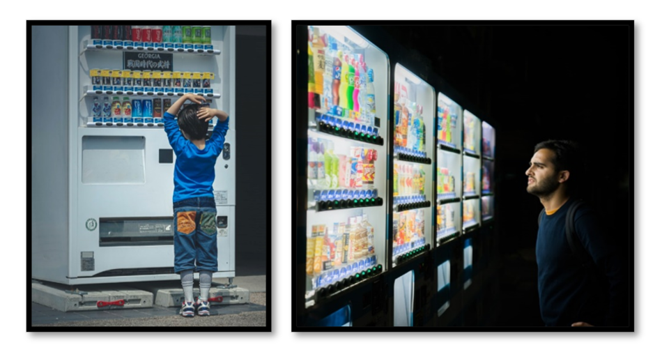

Deciding, choosing, and learning, What's the difference?
 Image credit: Pexels
Image credit: Pexels
In my world, deciding is different from choosing but similar to learning, and here is why.
While we typically use decision and choice interchangeably, there are slight – but critical – differences between the two. Deciding typically refers to the process of weighing each option, while considering your goals and previous experiences. In other words, deciding is synonymous to “making up your mind”. In contrast, choice is the outcome. Once you’ve made up your mind, you make a choice.
We decide and make choices all the time. When you wake up in the morning, you decide what you want to drink. You consider the options available to you which could include juice, milk or coffee while also thinking about your goal, which could be to feel alert as quickly as possible.
Without missing a beat, you reach for the coffee pot. You only do this of course because you know that coffee is the best stimulant.
Now imagine that you are in a foreign country, where these three beverages are not available but three unknown options are offered to you. Your goal remains the same. How do you decide what to choose?

Enter learning.
Without any knowledge about the options, you are forced to just pick one at random. But you will quickly learn from the outcome of your choice. What you do with this newly acquired information is what I am interested in.
Let’s say that your beverage choice on Day 1 did make you more alert. Do you stick with the same choice on Day 2 or decide to explore the other options? What about Day 3?
As a decision-making researcher, I study the strategies used by people of various ages when deciding, which happens before they make their choice and based on what they learned over time.
We know that the complexity of decision-making and the ease with which we learn improves as children age but reverses as adults reach their golden years.
Instead of asking people to decide between juice, milk and coffee, I present them with options they have never seen before, with a clear goal: get as many points as you can and at the end of the task, these points will be converted to money.
The children and adults who complete my decision-making task must therefore first learn about the options, choosing somewhat randomly at first, but over time, decide which option to choose based on what they have learned over time. Choose the most valuable option every time and leave with more money!
To be able to examine learning and therefore decision-making over the course of more than just a few simple choices, the value of the options they are presented with change over time. This forces participants to continuously engage in learning in their decision-making if they want all the money I promised them.
Tricky huh?
By understanding how and why children and older adults rely on simpler strategies than younger adults, I hope that my research can help us to optimize the way we teach children and promote lifelong learning in older adults.
So, when I tell people I study decision-making, I mean I study learning, not choice.
About me
I am a doctoral candidate in Experimental Psychology. I hold a BA in Psychology from McGill University and received my Master’s degree in Experimental Psychology at Concordia University. I am also the Founder and Editor-in-Chief of Concordia’s Journal of Accessible Psychology (CJAP) as well as the Co-Founder and Liaison for Concordia’s Journal of Psychology and Neuroscience (CJPN).
I examine how and why decision-making strategies changes across the lifespan. My work aims to understand the neural mechanisms behind these changes in order to support the more complex strategies in children and the elderly. My doctoral research is funded by the Natural Sciences and Engineering Research Council of Canada (NSERC) as well as by Concordia University.
Want to follow more of my work as a Public Scholar at Concordia University?
Click here
Alexa Ruel
Post doctoral Researcher
My research interests include decision-making strategies and cognitive control changes during healthy aging.